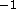

Calibrated Spectra
These are the pairs that comprise the spectrum. The spectra are given in vacuum wavelengths in the heliocentric frame, with flux density given in units of Å. An estimated error is also output, as well as a mask associated with each pixel, as described in Table 13.
Spectroscopic Parameters
Catalogs produced by the spectroscopic pipelines (described below in § 4.10) are summarized in Tables 11 and 12. For each spectrum, we measure the redshift using several techniques, locate and characterize lines, and assign an identification. The catalog contains 54,008 spectra, with 46 parameters measured for each spectrum, and 34 parameters measured for each emission line identified in each spectrum.
Images of the Spectra
For convenience, we also provide a plot of each spectrum. These are GIF images of the spectrum, with significant features, our classification, and measured redshift indicated.